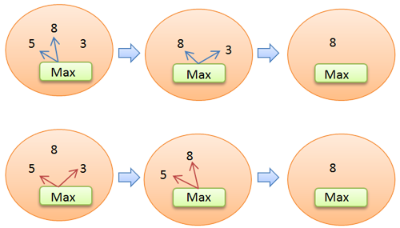

La programmation chimique est inspirée par le mécanisme de réaction chimique, et est caractérisée particulièrement par son non-déterminisme.
Les calculs peuvent être considérés comme des réactions, contrôlées par un ensemble de règles, et les données comme des molécules, le tout présent dans une solution. La réaction déclenchée continuera jusqu’à ce que le système devienne stable, et aboutira ainsi à une solution.

Le schéma représente une réaction permettant de trouver le nombre maximum parmi plusieurs. Ici la règle de réaction est la règle "Maximum" et les réactifs sont 5, 8 et 3. Comme le montrent les flèches bleues, la règle va tout d'abord réagir avec 5 et 8 pour ne conserver que 8 dans la solution. Puis, elle réagira avec 8 et 3 pour ne laisser que 8 dans la solution, qui devient alors inerte. La réaction est terminée. Lors d'une autre exécution, l'ordre du choix des réactifs pourra être différent, comme le montrent les flèches rouges.